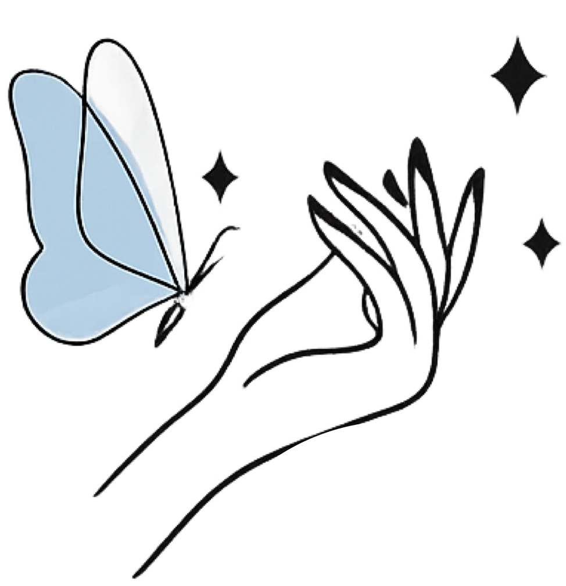

Healthier feet. Renewed confidence.Pies más sanos. Confianza renovada.
Brand Booklet · Version 2.0 · July 2026 Territory: Clínica Suave · Prepared by Consequi Partners LLCManual de Marca · Versión 2.0 · Julio 2026 Territorio: Clínica Suave · Elaborado por Consequi Partners LLC
bloombeautynailspa.com · (805) 637-9499 · Santa Barbara, CASanta Bárbara, CA
01 · Brand strategy01 · Estrategia de marca
A specialist, not a salonUna especialista, no un salón más
One-liner.En una línea.Bloom Beauty Nail Spa is a licensed, bilingual nail and clinical-pedicure studio in Santa Barbara where clients leave with healthier feet and renewed confidence — not just polish.Bloom Beauty Nail Spa es un estudio bilingüe y con licencia de uñas y pedicura clínica en Santa Bárbara, donde las clientas salen con pies más sanos y confianza renovada — no solo con esmalte.
Archetype.Arquetipo.Caregiver (primary) · Sage (secondary). The brand feels like being genuinely looked after by someone who knows exactly what she's doing.Cuidadora (primario) · Sabia (secundario). La marca se siente como ser atendida de verdad por alguien que sabe exactamente lo que hace.
The enemy.El enemigo.The assembly-line nail salon: rushed, interchangeable, no health knowledge, no relationship. Every brand decision is the deliberate opposite.El salón de uñas en serie: con prisas, impersonal, sin conocimiento de salud y sin relación con la clienta. Cada decisión de marca es deliberadamente lo contrario.
Audience.Audiencia.Local Spanish- and English-speaking women, 30–60, arriving from Instagram and word-of-mouth. They value being remembered.Mujeres de la zona que hablan español e inglés, de 30 a 60 años, que llegan por Instagram y recomendaciones. Valoran que las recuerden.
The feeling, five seconds in.La sensación, a los cinco segundos."This is a real professional who will take care of me." Warm. Clean. Trustworthy. Personal."Esta es una verdadera profesional que va a cuidar de mí." Cálido. Limpio. Confiable. Personal.
Leverage asset.Activo clave.The blue butterfly — transformation made visible. It owns the action color, serves as the favicon, and marks the way through every layout.La mariposa azul — la transformación hecha visible. Es dueña del color de acción, funciona como favicon y guía el recorrido en cada diseño.
Is not:No es:rushed, clinical-cold, cutesy.apresurada, fría-clínica, ni cursi.
English and Spanish are peers on every surface — never one a translated afterthought. The credential appears above the fold, always: Licensed Manicurist · Técnica en pedicura clínica.El inglés y el español son iguales en cada superficie — ninguno es una traducción de relleno. La credencial aparece siempre en la parte superior: Licensed Manicurist · Técnica en pedicura clínica.
In brand
Dentro de la marca
Off brand
Fuera de la marca
"Tus pies también merecen cuidado experto — book your clinical pedicure at Bloom Beauty Nail Spa today.""Tus pies también merecen cuidado experto — agenda hoy tu pedicura clínica en Bloom Beauty Nail Spa."
"OMG girl!! Slots going FAST, don't sleep on these deals!!""¡¡Amiga, córrele!! ¡Los lugares VUELAN, no te duermas con estas promos!!"
"Every visit starts with a health check, because beautiful nails begin with healthy feet.""Cada visita comienza con una revisión, porque las uñas hermosas empiezan con pies sanos."
"Our synergistic wellness solutions leverage best-in-class methodologies.""Nuestras soluciones sinérgicas de bienestar aprovechan metodologías de clase mundial."
Rules.Reglas.Lead with care, prove with credentials. Short sentences, warm verbs: care, restore, renew, protect. Emojis live in social captions only. Prices stated plainly — clarity is a form of care.Primero el cuidado, respaldado por credenciales. Frases cortas y verbos cálidos: cuidar, restaurar, renovar, proteger. Los emojis solo van en redes sociales. Los precios se dicen claro — la claridad también es una forma de cuidar.
Spanish register: Mexico City regional — warm "tú" form, natural phrasing, never machine-literal.Registro del español: regional de la Ciudad de México — tuteo cálido, fraseo natural, nunca traducción literal de máquina.
03 · Logo system03 · Sistema de logotipo
One family, four rolesUna familia, cuatro funciones
Horizontal wordgram · website headerWordgram horizontal · encabezado web

Icon lockup · section accentsÍcono compuesto · acentos de sección
Butterfly · favicon & primary iconMariposa · favicon e ícono principal
Spec
Especificación
Rule
Regla
Wordgram usageUso del wordgram
Booklet cover, website header, and key cover sections of the home page only — typically placed over a hero image.Solo en la portada del manual, el encabezado del sitio web y las secciones clave de portada del home — normalmente sobre una imagen hero.
Butterfly iconÍcono de mariposa
Favicon and the primary icon associated with Bloom Beauty Nail Spa; wayfinding marks, app tiles, social avatars.Favicon e ícono principal asociado a Bloom Beauty Nail Spa; señalización, íconos de app y avatares en redes.
Clear spaceEspacio libre
Height of the butterfly on all four sides.La altura de la mariposa por los cuatro lados.
Porcelain, Blush Veil, white, or photography with a light scrim; transparent PNGs provided.Porcelana, Velo Rubor, blanco o fotografía con velo claro; se entregan PNG transparentes.
NeverNunca
Recolor, rotate, add shadows, stretch, or set the script face in live type.Recolorear, rotar, agregar sombras, estirar, ni componer la tipografía script como texto vivo.
Hard rules.Reglas fijas.Body text only in Ink or Mauve Grey — never white-on-blush. Blue text on white uses #2E7A99. One Mariposa Blue CTA per viewport: the booking button owns the color. Petal Rose is decorative, never text.El texto de párrafo solo va en Ink o Mauve Grey — nunca blanco sobre rubor. El texto azul sobre blanco usa #2E7A99. Un solo botón Mariposa Blue por pantalla: el botón de reserva es dueño del color. Petal Rose es decorativo, nunca texto.
05 · Typography05 · Tipografía
Fraunces & Nunito Sans
Healthier feet, renewed confidencePies más sanos, confianza renovada
Pies más sanos, confianza renovadaHealthier feet, renewed confidence
Display: Fraunces 600/700 — a soft serif whose old-style warmth echoes the wordgram script without competing. Never below 1.25rem.Display: Fraunces 600/700 — una serif suave cuya calidez de estilo antiguo hace eco del script del wordgram sin competir con él. Nunca menor a 1.25rem.
Body: Nunito Sans 400/600/700 — humanist, mobile-legible, full Spanish diacritics (á é í ó ú ñ ¿ ¡).Cuerpo: Nunito Sans 400/600/700 — humanista, legible en móvil, con todos los diacríticos del español (á é í ó ú ñ ¿ ¡).
Token
Size
Tamaño
Line height
Interlineado
Display
clamp(2.5rem, 6vw, 4rem)
1.05
H1
clamp(2rem, 4.5vw, 3rem)
1.1
H2
clamp(1.5rem, 3vw, 2rem)
1.15
H3
1.25rem
1.3
Body
Cuerpo
1rem
1.65
Small
Pequeño
0.875rem
1.5
Button
Botón
1rem · 600 · ls .01em
1
Banned faces: Inter, Poppins, Montserrat, Roboto, Open Sans.Tipografías prohibidas: Inter, Poppins, Montserrat, Roboto, Open Sans.
06 · Shape & motion06 · Forma y movimiento
The lozenge rhythmEl ritmo de la pastilla
Book now →Reservar →24px card · soft blush shadowTarjeta 24px · sombra rubor suave12px inputCampo 12px
Element
Elemento
Spec
Especificación
Buttons / badgesBotones / insignias
Pill (999px)Pastilla (999px)
CardsTarjetas
24px radiusRadio de 24px
Image masksMáscaras de imagen
32px radiusRadio de 32px
InputsCampos
12px radiusRadio de 12px
DividersDivisores
1.5px Petal Rose hairlines — no grey 1px bordersLíneas finas de 1.5px en Petal Rose — sin bordes grises de 1px
ElevationElevación
0 8px 30px rgba(216,154,166,.18)
MotionMovimiento
250ms ease-out fade + 8px rise on scroll; hover lifts 1px; reduced-motion respectedAparición de 250ms + elevación de 8px al hacer scroll; hover sube 1px; se respeta reduced-motion
Outer containers are always rounder than inner. The butterfly icon marks section starts and list items — small and repeated, never a watermark.Los contenedores externos siempre son más redondeados que los internos. El ícono de mariposa marca inicios de sección y elementos de lista — pequeño y repetido, nunca como marca de agua.
07 · Marketing templates07 · Plantillas de marketing
Format specs per channelEspecificaciones por canal
Channel
Canal
Format
Formato
Spec
Especificación
Website heroHero del sitio
16:9
Hero image with light scrim, horizontal wordgram overlaid, single blue CTAImagen hero con velo claro, wordgram horizontal encima y un solo botón azul
Instagram post
1:1
Blush Veil field, Ink type, butterfly icon corner markFondo Velo Rubor, tipografía Ink, mariposa en la esquina
Instagram story
9:16
Full-bleed treatment photo, white lozenge caption cardFoto de tratamiento a sangre completa, tarjeta blanca tipo pastilla
Google Business
4:3
Studio/result photography, no text overlayFotografía del estudio o resultados, sin texto encima
Booking emailCorreo de reserva
—
Nunito Sans only, butterfly icon at 32px, blue button, footer: bloombeautynailspa.com · (805) 637-9499Solo Nunito Sans, mariposa a 32px, botón azul, pie: bloombeautynailspa.com · (805) 637-9499
Photography direction.Dirección fotográfica.Natural light; real hands and feet mid-treatment; blush and white environments. No stock-spa clichés — no orchids, no stones, no lotus.Luz natural; manos y pies reales en pleno tratamiento; ambientes rubor y blanco. Sin clichés de spa de banco de imágenes — ni orquídeas, ni piedras, ni flor de loto.
08 · Do / Don't08 · Sí / No
Five calls that keep it on brandCinco decisiones que mantienen la marca
DoSí — one Mariposa Blue "Book / Reservar" button per screen.un solo botón Mariposa Blue de "Reservar" por pantalla.
Don'tNo — scatter three competing CTAs.regar tres botones que compiten entre sí.
DoSí — pair every English headline with its Spanish peer.acompañar cada titular en inglés con su par en español.
Don'tNo — hide Spanish behind a settings menu.esconder el español en un menú de configuración.
DoSí — state the clinical credential above the fold.mostrar la credencial clínica en la parte superior.
Don'tNo — bury "pedicura clínica" in an about paragraph.enterrar "pedicura clínica" en un párrafo de "acerca de".
DoSí — use the butterfly icon as a small, repeated wayfinding mark.usar la mariposa como marca pequeña y repetida de señalización.
Don'tNo — enlarge it into a watermark or hero graphic.agrandarla como marca de agua o gráfico principal.
DoSí — show real treatment photography from the Santa Barbara studio.mostrar fotografía real de tratamientos del estudio en Santa Bárbara.
Don'tNo — use stock images of anonymous spas.usar imágenes de banco de spas anónimos.
09 · Contact & asset index09 · Contacto e índice de activos
Website mockup (index.html)Maqueta del sitio (index.html)
Pending v2 rename updatePendiente actualización v2 de nombre
Phase 2 engagement: studio photography, live Square link, domain launch (bloombeautynailspa.com), Google Business Profile.Fase 2 del proyecto: fotografía del estudio, enlace activo de Square, lanzamiento del dominio (bloombeautynailspa.com) y perfil de Google Business.
 Horizontal wordgram · website headerWordgram horizontal · encabezado web
Horizontal wordgram · website headerWordgram horizontal · encabezado web